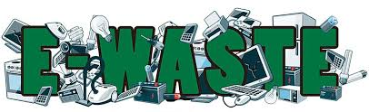
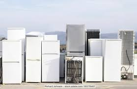
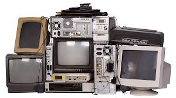
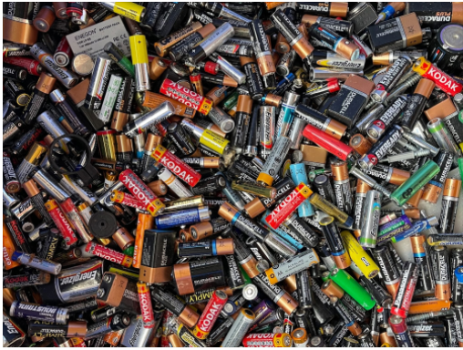

What is E-Waste?
Understanding the problem.
Defining E-Waste
E-waste, short for electronic waste, encompasses discarded electrical or electronic devices. This includes everything from old computers and televisions to mobile phones and household appliances.
Types of E-Waste
E-waste can be categorized into several types:
Large Appliances
Refrigerators, washing machines, microwaves that require special handling.
Small Household Electronics
Phones, tablets, laptops, and chargers commonly replaced often.

Entertainment and IT Equipment
TVs, printers, gaming consoles, and networking devices.
Lighting and Batteries
Fluorescent lamps and various types of batteries needing careful disposal.
The Growing Concern
The rapid advancement of technology leads to a constant stream of new devices, which in turn generates a growing amount of e-waste. This poses significant environmental and health challenges.